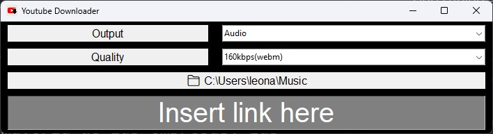

Ytdw
- published
- reading time
- 3 minutes
La pirateria es mala, peeeeeeeeeeeeeero.
No enserio, jamas podria apoyar el robo de la propiedad intelectual de otra persona. Dicho esto, tampoco puedo apoyar financieramente a una empresa que roba contenido para sus trabajos propios de los cuales recibe un redito financiero, o mismamente, de empresas que exprimen miles de millones de dolares a projectos open source , aprovechando la naturaleza de los mismo, sin aportar absolutamente nada de vuelta.
No digo que en el momento que empiezes un proyecto, tengas que aportar directamente a un tercero, justamente esa suele ser la barrera que impide la mayoria de negocios de ser una realidad, y si bien es apreciable la idea de pagar mensualmente una licencia para asi poder (de manera legal) inciar con dichos emprendimientos, por desgracia, esto suele evolucionar en una relacion sumamente toxica, en la que cada vez mas beneficios son removidos de la licencia, sin mencionar que (en el caso de software por lo menos) estas son licencias de uso, es decir, tu nunca eres el dueño de tus herramientas.
Si bien existen nuevas legislaciones que consideran estas tematicas, en la gran mayoria de los casos, el proceso de enshittification aumenta. Yo, hace ya bastante tiempo, vengo notando este fenomeno en la web, y siendo una persona que tuvo el lujo de vivir la red en su estado mas libre, donde decias, “que asco la tele son puros anuncios, mejor miro youtube”, pasar a “es puro anuncio, youtube, ¿a ver que hay en la tele?”, inclusive empeze a consumir mucho mas los shorts de youtube porque por lo menos ahi puedo hacer skip con un swipe a las publicidades,en un intento lamentable por aumentar ganancias anuales para los accionistas pero despidiendo a miles de trabajadores.
En fin,no voy a adentrarme en el detremento para el mundo que son las companias cotizadas en bolsa; mi punto es que no solo las paginas estan destruyendo la UX con la intencion de exprimir hasta el ultimo centavo de la publicidad que puedan, sino que en cualquier momento, tu acceso puede ser arbitrariamente y bajo ninguna posibilidad de protesta, completamente eliminado.
Y aunque esto sea contra la politica de la mayoria de las empresas, las cuales obviamente tienen un incentivo para monopolizar tanto el consumo desde/ y la custodia de los datos alojados en su plataforma, no puedo evitar el mantener una copia del contenido que yo fabrico,inclusive si este ha sido subido a su plataforma.

Por lo tanto, este es un programa que usando pytube, le permite al usuario ingresar un link y de esta forma descargar, a la calidad seleccionada, audio, o video de un de youtube. Es muy minimalista y no necesita instalacion, y tambien compile binarios para windows y linux, pero (obviamente) tambien esta el codigo base por si estas corriendo templeOS o peor aun MacOS.
Eso fue todo, visiten el repo, saludos a la flia, y gracias por leer.